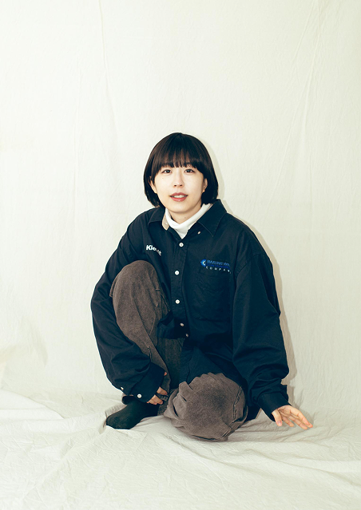
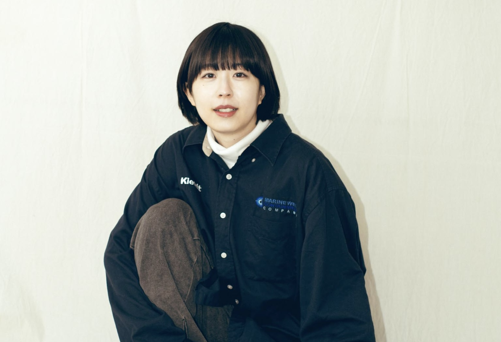

CONTACT
01
WORK
02
DIARY


ふじいゆうゆう
藤井憂憂
1999年3月17日 広島生まれ
藤
井
憂
憂
WORK
Stage
2025
南極第8回公演
『ゆうがい地球ワンダーツアー』
2025年9月4日〜9月7日
彩の国さいたま芸術劇場 小ホール
脚本・演出：こんにち博士
役名：紀寿子 / 星少年の母（声）
劇団スポーツ 本公演
『逆VUCAより愛をこめて』
2025年1月31日〜2月2日
下北沢駅前劇場
脚本・演出：内田倭史 / 田島実紘
役名：小川サナ
2024
南極ゴジラ 第6回本公演
『バード・バーダー・バーデスト』
2024年9月19日〜23日
すみだパークシアター倉
脚本・演出：こんにち博士
役名：カイロ
2023
南極ゴジラ 第4回本公演
『怪奇星キューのすべて』
2023年8月3日〜6日
北千住BUoY
脚本・演出：こんにち博士
役名：UB
2022
長澤脚本河原演出企画『interview』
2023年8月3日〜6日
合人社ウェンディひと・まちプラザ マルチメディアスタジオ
脚本：長澤 拓真 演出：河原 翔太
役名：山本
2020
演劇引力廣島第17回プロデュース公演
『泥を泳ぐ』
2020年2月21日〜24日
JMSアステールプラザ
脚本・演出：象千誠s
役名：佐久間理絵
2019
第7回中国ブロック劇王決定戦
独壇場『マッチアップ』
俳優賞受賞
2019年10月
広島市青少年センター
役名：佐久間理絵
Movie
2025
『傷ついた天使』
監督：田辺洸成
PFFアワアード2025 入選
『逆流』
監督：北野陽太
仙台短編映画祭 2025 入選
第1回栃木国際映画祭 国際短編映画部門 入選
2024
『分離の予感』
監督：何英傑
東京学生映画祭 入選
PFFアワアード2024 入選
TAMA CINEMA FORUM「ある視点」部門 入選
『まなざし、まなざす』
監督：吉本ちひろ
第16回下北沢映画祭 下北沢商店連合賞受賞
2022
『こちらあみ子』
監督：森井勇佑
CM
2024
株式会社GENDA GiGO Entertainment ボーリング事業所紹介
西都PROJECT『18歳の図書館』
3年後の私
2023
カラオケ バンガローハウス 小田原店
オープン記念ドラマ『Chaos in da house』
監督｜脚本 守田悠人
Drama
2020
広島ホームテレビ『恋とか愛とか（仮）』
アスリートSP 第1弾「ごっつぁんしない男」
放送局：広島ホームテレビ
役名：高校生時代のヒロイン
Radio
2022
大窪シゲキの９ジラジ
放送局：広島ホームテレビ
火曜日アシスタントDJ
Staff
2026
南極第9回本公演「ホネホネ山の大動物」
2026年5月14日（木）〜5月17日（日）
吉祥寺シアター
脚本・演出：こんにち博士
演出補佐
2025
ニッポン放送×南極 企画公演『SYZYGY』
2025年11月27日(木)～11月30日(日)
ニッポン放送イマジンスタジオ
脚本・演出：こんにち博士
演出補佐
南極第7回本公演「wowの熱」
2025年3月26日(水) ～ 3月30日(日)
会場：新宿シアタートップス
脚本・演出：こんにち博士
演出補佐
2024
南極ゴジラ第5回本公演
「（あたらしい）ジュラシックパーク」
2024年3月28日（木）〜3月31日（日）
東京都 王子小劇場
脚本・演出：こんにち博士
演出補佐
映画
『ライフ・イズ・ビューティフル・オッケー』
監督：石田忍道
第25回TAMA NEW WAVE グランプリ受賞
ミドルマネージャー
2023
南極ゴジラ『南極ゴジラの地底探険』
2023年3月25日〜3月26日
大阪市北区 アートエリアB1
脚本・演出：こんにち博士
2023年10月21日
福島県南相馬市 小高交流センター
脚本・演出：こんにち博士
演出補佐
2022
南極ゴジラ「南極ゴジラの地底探検」
2024年3月28日〜3月31日
王子小劇場
脚本・演出：こんにち博士
演出補佐
映画『こちらあみ子』
監督：森井勇佑
広島弁方言指導、メイキングナレーション